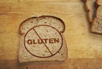

T.C Ministry of Health
HSGM Homepage
Facebook
Twitter
Google +
Instagram
Homepage
Presidency
Publication
News
F.A.Q
Contact

Erişkin Bazı Metabolizma
Hastalıkları
ve Çölyak Hastalığı
Kontrol Programı
Çölyak Nedir
Çölyak ve Görülme Sıklığı
Çölyak Belirtileri
Tanısı ve Komplikasyonları
Çölyak Hastalığının Tedavisi
Nedir?
Çölyak ve Gluten
Çölyak
Yasal Düzenlemeler
Çölyak Broşürleri
Faydalı Web Sayfaları
Çölyak Logo